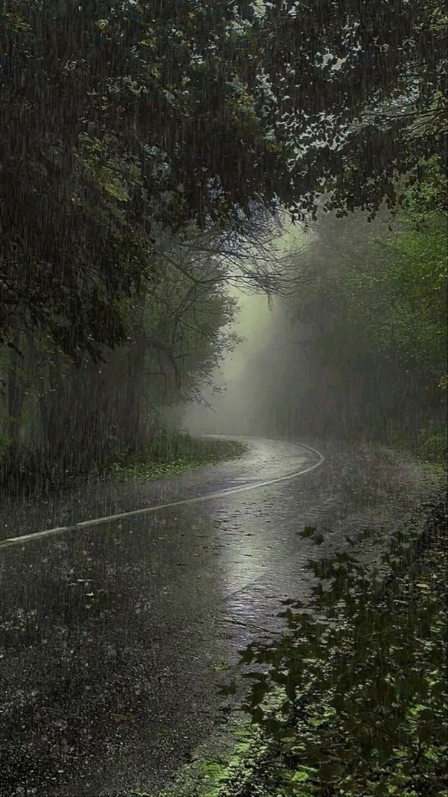

La lluvia tiene una forma especial de acompañar los sentimientos, como si entendiera los momentos de tristeza y alegría. El sonido de sus gotas al caer transmite calma y hace que los recuerdos aparezcan en silencio. A veces, parece limpiar no solo las calles, sino también las preocupaciones del corazón. En los días grises, la lluvia invita a pensar, soñar y valorar los pequeños instantes de la vida. Su frescura abraza el alma y llena el ambiente de nostalgia y tranquilidad. Por eso, muchas personas encuentran en la lluvia una sensación de paz y esperanza.
La lluvia tiene una manera única de tocar el corazón de las personas, como si cada gota llevara consigo recuerdos y emociones guardadas en el alma. Cuando cae lentamente sobre los techos y las ventanas, crea una melodía suave que invita a pensar en momentos felices, en personas queridas y en sueños que aún viven en nuestro interior. Muchas veces, la lluvia acompaña la tristeza y el silencio, pero también trae calma y esperanza, como si quisiera recordarnos que después de cada tormenta siempre llega la tranquilidad. Su aroma fresco llena el ambiente de nostalgia y hace que el mundo parezca detenerse por un instante. Caminar bajo la lluvia puede sentirse como un abrazo de la naturaleza, capaz de limpiar las preocupaciones y renovar el ánimo. Por eso, la lluvia no solo es un fenómeno natural, sino también una compañera de emociones que inspira paz, reflexión y sentimientos profundos.